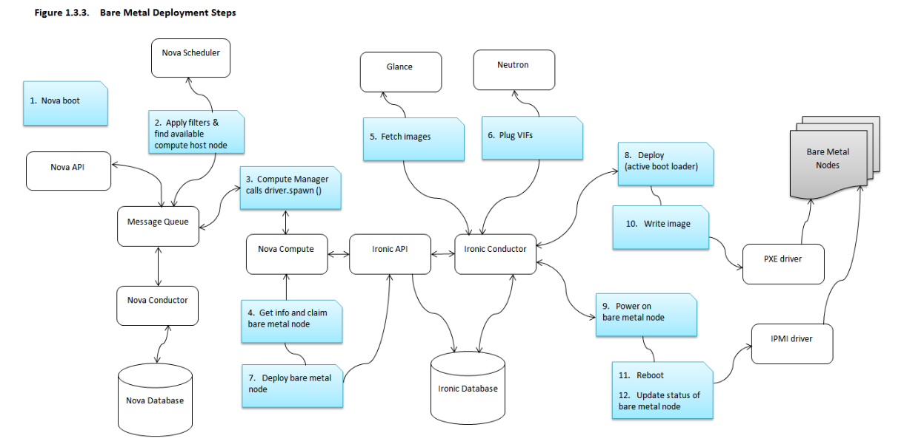

Ironic¶
Ironic 是一个 openstack 项目，主要用来管理裸机。包括裸机的电源控制，系统部署，网络配置等。

- 1. 通过packstack 安装Ironic 安装
- 2. 通过kolla 安装Ironic 安装
- 3. virtualbmc 使用
- 4. DIB制作ironic镜像
- 5. openstack制作window镜像
- 6. Ironic 相关概览及以及延伸知识
- 7. Ironic 临时笔记
Ironic 是一个 openstack 项目，主要用来管理裸机。包括裸机的电源控制，系统部署，网络配置等。